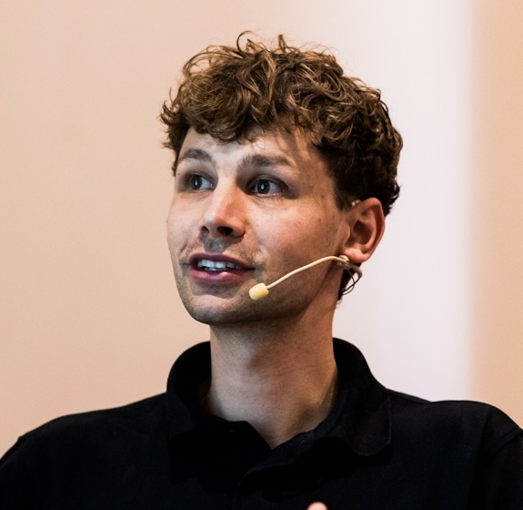
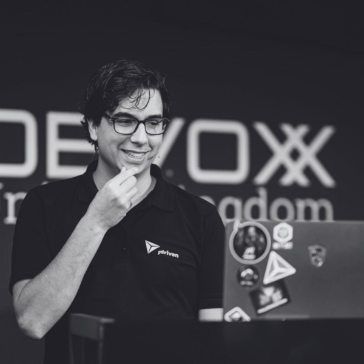

Joy of Coding
June 27, 2025 - De Doelen, Rotterdam
Speakers_
We will announce a new speaker every couple of weeks. So stay tuned!
Join us? Call for Papers is open for lighting talks:
register here
Sara Vieira
Sara Vieira is a front-end developer with a knack for making tech playful, Sara is all about pushing
boundaries in JavaScript, React, and design. She loves showing how a touch of creativity can turn even the
simplest code into something delightful and unexpected. Join us at Joy of Coding, where Sara will share
her passion for lively, accessible development and remind us all that coding can—and should—be fun.
Prepare for a talk brimming with inspiration, practical demos, and that unmistakable spark of curiosity to
level up your own projects!

Paco van Beckhoven
Paco is a passionate and experienced software engineer who loves improving the way we build software. As a
senior software engineer at Hexagon, he focuses on refining development processes and championing better
software quality. Paco regularly speaks at conferences, where he combines education and entertainment to
inspire and engage his audiences. At Joy of Coding, he’ll share his expertise on transforming code reviews
from frustrating chores into collaborative, efficient, and constructive experiences. Expect to leave with
fresh insights and practical tips to elevate your own development practices!

Alexander Chatzizacharias
Alexander is a software engineer at JDriven with a unique blend of Dutch and Greek roots—and an even more
unique perspective on coding. With a master’s in Game Studies from the University of Amsterdam, he’s on a
mission to bridge the gap between game development and software engineering. Alexander believes these two
industries have a lot to learn from each other, and he’s passionate about integrating their technologies
and methodologies to push boundaries in the tech world.

Bert Hubert
Bert Hubert is an inspiring speaker known for his passion for technology, engaging storytelling, and deep
technical expertise. As the founder of PowerDNS and an advocate for open-source innovation, Bert combines
humor, real-world insights, and fascinating topics — like the intersection of computing and biology — to
inspire and ignite curiosity in his audience. His relatable, down-to-earth style makes him the perfect
speaker to celebrate the creativity and Joy of Coding.
Shirley Tarboton
Shirley Tarboton is an insightful speaker who brings a fresh perspective to the intersection of software
development and sustainability. With her technical expertise and insights, she empowers audiences to think
differently about how they write and optimize code, offering insights to make software more
energy-efficient. Shirley's passion for creating a greener future through technology makes her a perfect
fit for Joy of Coding, inspiring developers to embrace their role in building a sustainable digital world.